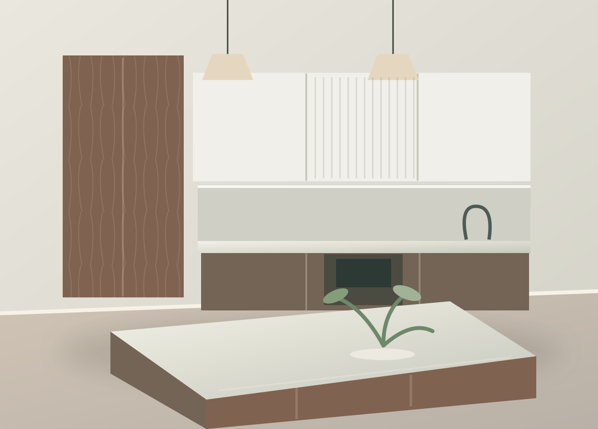

Планировка, хранение, рабочие зоны, фактуры — всё обсуждается под особенности помещения и привычки семьи.
Выбираем схему с учётом проходов, встроенной техники, освещения и конфигурации комнаты.
Лаконичное решение вдоль одной стены.
Рабочие зоны и хранение по двум сторонам.
Максимум рабочей поверхности и систем хранения.
